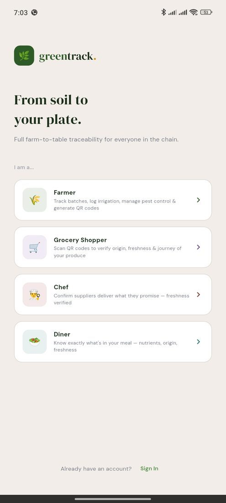

Between a Seed and a Receipt
Built for the grower's plot and the diner's table — with one record connecting them.
Plot Management
Pin every plot by GPS and keep planting, spacing, and soil notes attached to the exact spot.
Irrigation Log
Record water source and timing in a tap, and let the app schedule the next round for you.
Weather Insight
Local rainfall and wind data translated into what it actually means for this week's planting.
Pest Diagnosis
Photograph an affected leaf and get a matched pest ID with the right treatment and dose.
Harvest Lock
A pre-harvest interval countdown holds the harvest button until spray residue has fully cleared.
Batch Tags
Final weight logged, and the app auto-generates a QR tag ready to print onto the crate.
Photo Diary
A running visual record of every plant's progress, from seedling to fruiting.
Yield Analytics
Season totals measured against last year's harvest and your own goal, plot by plot.
Scanning Is a Feature Too
No login, no app required to verify a batch — anyone can scan a tag on a shelf, a crate, or a menu and see the same record the grower built.
Farm of Origin
Exactly which plot and grower this batch came from.
Harvest Timestamp
When it was picked, not just when it arrived on a shelf.
Treatment History
Any pesticide used, and confirmation the safety interval was cleared.

